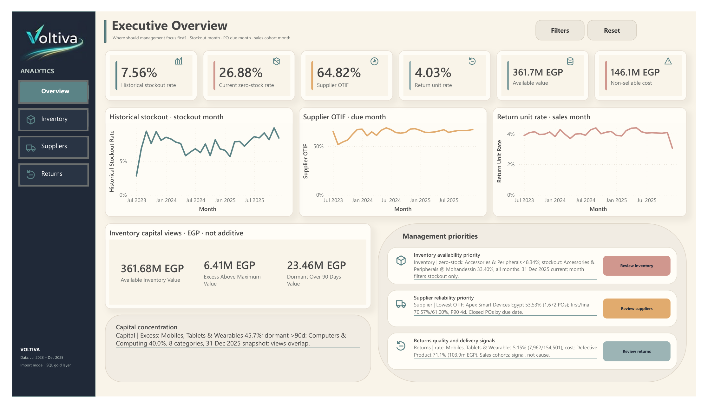

Graduation capstone
Voltiva
B.TECH-Inspired Retail & Supply Chain BI
Our team built an end-to-end BI solution for Voltiva, a simulated multichannel electronics retailer. Four Power BI report pages help managers prioritize stock replenishment, rebalance excess inventory, and investigate supplier and returns issues.
Management priorities

Prioritize replenishment where availability is low and rebalance stock where the data shows excess.
How we built Voltiva
We processed data through Bronze, Silver and Gold layers in SQL Server, validated the data, then built a galaxy schema with 9 dimensions and 5 fact tables. In Power BI, we used report pages for Inventory, Suppliers, Returns and Executive Overview to connect operational KPIs with follow-up actions.
My contribution included developing DAX measures and designing the Power BI dashboard interface.